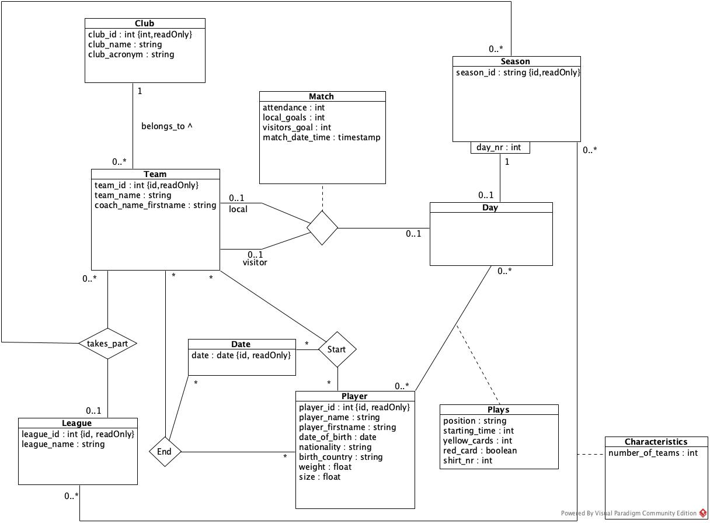

SELECT * FROM Portfolio WHERE author = 'Lilian';
À propos;
Bonjour/Bonsoir, je suis Lilian Chamaille, étudiant en 1re année de BUT Informatique à l'IUT de Lannion.
Futur étudiant en alternance, je suis passionné par l'informatique sous tous ces aspects et je souhaite accumuler un maximum d'expérience. Dans ce but, je compte terminer mon BUT en alternance pour ensuite rejoindre l'ENSSAT toujours en alternance.
Je suis quelqu'un de motivé, rigoureux et j’aime relever les défis qui me font face.
Formations;
BUT Informatique – IUT de Lannion
De 2024 à aujourd’hui. Formation complète en développement, réseaux, base de données, gestion de projets et Algorithmique. Nombreux projets pratiques et travail en équipe. Cette formation permet d'introduire les étudiants aux divers aspects de l'informatique et ainsi apprendre diverses technologies permettant d'atteindre le poste de Technicien
Licence de Biologie – UBO de Brest
De 2020 à 2023. Formation de Biologie des Organismes, des Populations et des Ecosystèmes. Il s'agit d'une formation plutôt théorique mais qui contient diverses aspects pratiques tels que des dissections ou des études sur le terrain.
Baccalauréat Général Scientifique – Lycée Notre Dame du Kreisker
De 2017 à 2020. Spécialités : Sciences de la Vie et de la Terre. Approche théorique et pratique des sciences telles que les mathématiques, la physique, la chimie et centré autours de la biologie ainsi que de la géologie.
Compétences;
Développer des applications
Créer des programmes simples avec des interfaces basiques et des interactions utilisateur-fichier.
Langage C : implémentation de conceptions simples à partir de spécifications
Java : conception d’applications avec UML, réalisation d’interfaces graphiques (IHM)
Tests : évaluation des applications par rapport aux spécifications
Méthodologie : essais, débogage, amélioration continue de la fiabilité
Algorithmes
Analyser un problème, concevoir une solution structurée et l'implémenter efficacement.
Analyse : découpage méthodique de problèmes en éléments simples (C, Python)
Comparaison d’algorithmes : étude d’efficacité (tris, recherche…)
Structures de données : utilisation adaptée selon les besoins (listes, tableaux…)
Outils mathématiques : formalisation et application (notamment en Python)
Poste de travail
Installer, configurer un système d’exploitation et les outils nécessaires au développement.
Composants système : identification des éléments matériels et logiciels (Bash, PHP)
Environnement linux : utilisation des commandes et outils de base (Bash)
Installation et configuration : systèmes d’exploitation et outils de développement
Réseaux : découverte et mise en place de réseaux simples avec Packet Tracer
Base de données
Modéliser, concevoir et mettre en œuvre une base de données à partir des besoins exprimés.
Conception : modélisation à partir d’un cahier des charges (diagramme de classes, dépendances, normalisation)
Implémentation : passage du modèle conceptuel au modèle relationnel (TutorialD, PostgreSQL)
Requêtes SQL : mise à jour, interrogation et analyse des données (sélection, jointures, agrégations…)
Visualisation : interprétation des données sous forme exploitable
Besoins métiers
Analyser les attentes d’un client ou utilisateur pour proposer des solutions numériques pertinentes.
Analyse des besoins : identification des objectifs, cibles, fonctionnalités et contraintes techniques
Conception web : arborescence, charte graphique, maquette et développement de site adapté
Gestion de projet : utilisation d’outils collaboratifs, respect des délais et des livrables
Travail en contexte client : compréhension du cycle de développement, communication avec les parties prenantes
Travail en équipe
Reconnaître son rôle dans une équipe, collaborer efficacement et communiquer ses idées.
Organisation : répartition des tâches et gestion de l’équipe avec des outils collaboratifs
Communication : présentation orale individuelle et en groupe, gestion du temps, outils en ligne
Recherche & synthèse : analyse d’un sujet, veille documentaire, collecte et tri de l’information
Esprit d’équipe : compréhension des rôles, fonctions et statuts dans une équipe pluridisciplinaire
Projets;
Objectif : Réaliser un snake dans le termninal et le rendre totalement autonome par la suite.
Technologies : C
Difficultés : Trouver un algorithme correct du plus court chemin, éviter les colisions entre 2 serpents
Compétence reliée : Développer des applications informatiques simples
Voir le codeObjectif : Réaliser un site vitrine pour les Jeux Olympiques de Paris 2024 à partir du recueil des besoins du client
Technologies : HTML/CSS
Difficultés : Réaliser une maquette correcte, réussir à mettre en commun tous nos codes CSS en un seul fichier
Compétence reliée : Identifier les besoins métiers des clients et des utilisateurs
Voir le codeObjectif : Mettre en place les algorithmes de Machine Learning KNN et K-means puis les appliquer à différentes données comme des images
Technologies : Python
Difficultés : Appréhender les algorithmesn, apprendre à coder en Python et trouver des données intéressantes pour les tests
Compétence reliée : Appréhender et construire des algorithmes
Voir le codeObjectif : Réaliser d'un schéma UML à partir des besoins du client à partir d'une description de l'évènement puis traduction en base de donnée.
Technologies : TutorialD
Difficultés : Appréhender correctement le sujet et trouver une représentation UML correcte
Compétence reliée : Concevoir et mettre en place une base de données à partir d'un cahier des charges client
 Voir le codeObjectif : Réaliser une application à l'aide de javafx à partir du cahier des charges du client (ici l'application Ella'dance)
Technologies : Javafx, Scene Builder
Difficultés : Mettre en place l'UML à partir du cahier des charges
Compétence reliée : Développer des applications informatiques simples
 Voir le code
Voir le code
Experiences;
Employé polyvalent – Action, Cissac-Médoc
Période : Avril 2024 – Juin 2024
Réassort des rayons, mise en place des promotions, entretien de la surface de vente.
Compétences : Travail d’équipe, autonomie, efficacité
Hôte de caisse – Leclerc, Brest
Période : Septembre 2022 – Janvier 2023
Encaissement des clients, gestion des demandes en caisse, relation clientèle.
Compétences : Communication, autonomie
Équipier polyvalent – McDonald’s, Mantes-la-Ville
Période : Été 2022
Préparation des commandes, accueil client, entretien de la salle.
Compétences : Gestion du stress, communication, travail d’équipe